Complete Guide to Spatialmath-Python and Roboticstoolbox-Python
This notebook provides a comprehensive guide to working with spatial mathematics and robotics using Python. It covers:
- Basic spatial mathematics operations
- Transforms and rotations
- Robot modeling and kinematics
- Trajectory planning with visualization
- 3D visualization
**Author:** Ahmed Numan Pervane - IKCU|EMS LAB
Last Updated: September 2025
1. Installation and Setup
First, install the required libraries. This may take a few minutes.
# Install required packages
!pip install spatialmath-python roboticstoolbox-python matplotlib scipy -q
!pip install numpy==1.26.4 # You must restart the session after that code block proceed. Then you may continue to run below code blocks
print("✓ Installation complete!")
# Import libraries
import numpy as np
import matplotlib.pyplot as plt
from spatialmath import SE3, SO3, UnitQuaternion
from spatialmath.base import *
import roboticstoolbox as rtb
from roboticstoolbox import DHRobot, RevoluteDH, PrismaticDH
from math import pi
# Set up plotting
%matplotlib inline
plt.rcParams['figure.figsize'] = (10, 8)
print("✓ Libraries imported successfully!")
2. Basic Spatial Mathematics Operations
Let’s explore fundamental spatial math concepts including rotation matrices, translation vectors, and homogeneous transformations.
2.1 Rotation Matrices
# Create rotation matrices around different axes
R_x = rotx(45, unit='deg') # Rotate 45° around X-axis
R_y = roty(30, unit='deg') # Rotate 30° around Y-axis
R_z = rotz(60, unit='deg') # Rotate 60° around Z-axis
print("Rotation around X-axis (45°):")
print(R_x)
print("\nRotation around Y-axis (30°):")
print(R_y)
print("\nRotation around Z-axis (60°):")
print(R_z)
# Combine rotations
R_combined = R_z @ R_y @ R_x
print("\nCombined rotation (Z*Y*X):")
print(R_combined)
Rotation around X-axis (45°):
[[ 1. 0. 0. ]
[ 0. 0.70710678 -0.70710678]
[ 0. 0.70710678 0.70710678]]
Rotation around Y-axis (30°):
[[ 0.8660254 0. 0.5 ]
[ 0. 1. 0. ]
[-0.5 0. 0.8660254]]
Rotation around Z-axis (60°):
[[ 0.5 -0.8660254 0. ]
[ 0.8660254 0.5 0. ]
[ 0. 0. 1. ]]
Combined rotation (Z*Y*X):
[[ 0.4330127 -0.43559574 0.78914913]
[ 0.75 0.65973961 -0.04736717]
[-0.5 0.61237244 0.61237244]]
2.2 Using SO3 Class for Rotations
# Create SO3 rotation objects
R1 = SO3.Rx(45, unit='deg')
R2 = SO3.Ry(30, unit='deg')
R3 = SO3.Rz(60, unit='deg')
print("SO3 Rotation object:")
print(R1)
# Access the rotation matrix
print("\nRotation matrix:")
print(R1.R)
# Convert to different representations
print("\nRoll-Pitch-Yaw angles (degrees):")
print(R1.rpy(unit='deg'))
print("\nEuler angles ZYX (degrees):")
print(R1.eul(unit='deg'))
SO3 Rotation object:
1 0 0
0 0.7071 -0.7071
0 0.7071 0.7071
Rotation matrix:
[[ 1. 0. 0. ]
[ 0. 0.70710678 -0.70710678]
[ 0. 0.70710678 0.70710678]]
Roll-Pitch-Yaw angles (degrees):
[45. -0. 0.]
Euler angles ZYX (degrees):
[-90. 45. 90.]
2.3 Unit Quaternions
# Create quaternions
q1 = UnitQuaternion.Rx(45, unit='deg')
q2 = UnitQuaternion.Ry(30, unit='deg')
print("Quaternion for 45° rotation around X:")
print(q1)
print(f"\nQuaternion components [s, vx, vy, vz]: {q1.vec}")
# Quaternion multiplication
q_combined = q1 * q2
print("\nCombined quaternion (q1 * q2):")
print(q_combined)
# Convert to rotation matrix
print("\nRotation matrix from quaternion:")
print(q_combined.R)
Quaternion for 45° rotation around X:
0.9239 << 0.3827, 0.0000, 0.0000 >>
Quaternion components [s, vx, vy, vz]: [0.92387953 0.38268343 0. 0. ]
Combined quaternion (q1 * q2):
0.8924 << 0.3696, 0.2391, 0.0990 >>
Rotation matrix from quaternion:
[[ 8.66025404e-01 -2.77555756e-17 5.00000000e-01]
[ 3.53553391e-01 7.07106781e-01 -6.12372436e-01]
[-3.53553391e-01 7.07106781e-01 6.12372436e-01]]
3. Working with Transforms and Rotations
SE3 represents rigid body transformations in 3D space (position + orientation).
3.1 Creating SE3 Transforms
# Create a pure translation
T_trans = SE3(1, 2, 3)
print("Pure translation [1, 2, 3]:")
print(T_trans)
# Create a pure rotation
T_rot = SE3.Rx(45, unit='deg')
print("\nPure rotation (45° around X):")
print(T_rot)
# Create combined transform
T_combined = SE3(1, 2, 3) * SE3.Rx(45, unit='deg')
print("\nCombined transform (translation + rotation):")
print(T_combined)
# Extract translation and rotation
print("\nTranslation vector:")
print(T_combined.t)
print("\nRotation matrix:")
print(T_combined.R)
Pure translation [1, 2, 3]:
1 0 0 1
0 1 0 2
0 0 1 3
0 0 0 1
Pure rotation (45° around X):
1 0 0 0
0 0.7071 -0.7071 0
0 0.7071 0.7071 0
0 0 0 1
Combined transform (translation + rotation):
1 0 0 1
0 0.7071 -0.7071 2
0 0.7071 0.7071 3
0 0 0 1
Translation vector:
[1. 2. 3.]
Rotation matrix:
[[ 1. 0. 0. ]
[ 0. 0.70710678 -0.70710678]
[ 0. 0.70710678 0.70710678]]
3.2 Transform Operations
# Create two transforms
T1 = SE3(1, 0, 0) * SE3.Rz(90, unit='deg')
T2 = SE3(0, 1, 0) * SE3.Ry(45, unit='deg')
# Compose transforms
T_result = T1 * T2
print("Composed transform T1 * T2:")
print(T_result)
# Inverse transform
T_inv = T1.inv()
print("\nInverse of T1:")
print(T_inv)
# Transform a point
point = np.array([1, 0, 0])
transformed_point = T1 * point
print(f"\nOriginal point: {point}")
print(f"Transformed point: {transformed_point}")
Composed transform T1 * T2:
0 -1 0 0
0.7071 0 0.7071 0
-0.7071 0 0.7071 0
0 0 0 1
Inverse of T1:
0 1 0 0
-1 0 0 1
0 0 1 0
0 0 0 1
Original point: [1 0 0]
Transformed point: [[1.]
[1.]
[0.]]
3.3 Visualizing Coordinate Frames
# Create multiple transforms
T0 = SE3() # Identity (world frame)
T1 = SE3(1, 0, 0) * SE3.Rz(45, unit='deg')
T2 = T1 * SE3(0.5, 0, 0) * SE3.Ry(30, unit='deg')
T3 = T2 * SE3(0.3, 0, 0) * SE3.Rx(60, unit='deg')
# Plot coordinate frames
fig = plt.figure(figsize=(12, 10))
ax = fig.add_subplot(111, projection='3d')
# Plot each frame
T0.plot(ax=ax, frame='0', color='black', length=0.3, width=2)
T1.plot(ax=ax, frame='1', color='red', length=0.25, width=2)
T2.plot(ax=ax, frame='2', color='green', length=0.2, width=2)
T3.plot(ax=ax, frame='3', color='blue', length=0.15, width=2)
ax.set_xlabel('X')
ax.set_ylabel('Y')
ax.set_zlabel('Z')
ax.set_title('Multiple Coordinate Frames')
plt.tight_layout()
plt.show()
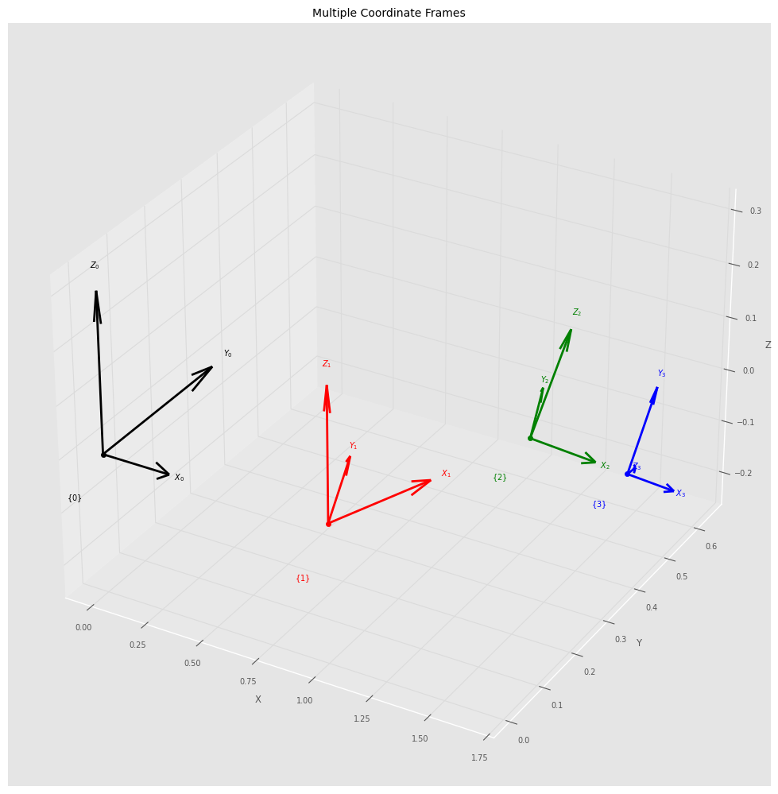
4. Robot Modeling and Kinematics
Now let’s work with robot models using the Robotics Toolbox.
4.1 Creating a Simple 2-Link Planar Robot
# Define link lengths
L1 = 1.0
L2 = 0.8
# Create robot using DH parameters
# RevoluteDH(d, a, alpha, offset)
robot_2link = DHRobot([
RevoluteDH(d=0, a=L1, alpha=0, offset=0),
RevoluteDH(d=0, a=L2, alpha=0, offset=0)
], name="2-Link Planar")
print(robot_2link)
print("\nDH Parameters:")
print(robot_2link.links)
DHRobot: 2-Link Planar, 2 joints (RR), dynamics, standard DH parameters
┌─────┬────┬─────┬──────┐
│ θⱼ │ dⱼ │ aⱼ │ ⍺ⱼ │
├─────┼────┼─────┼──────┤
│ q1 │ 0 │ 1 │ 0.0° │
│ q2 │ 0 │ 0.8 │ 0.0° │
└─────┴────┴─────┴──────┘
┌──┬──┐
└──┴──┘
DH Parameters:
[RevoluteDH(d=0, a=1, ⍺=0, name = "link1", m=0, r=[0, 0, 0], I=[0, 0, 0, 0, 0, 0], Jm=0, B=0, Tc=[0, 0], G=0), RevoluteDH(d=0, a=0.8, ⍺=0, name = "link2", parent="link1", m=0, r=[0, 0, 0], I=[0, 0, 0, 0, 0, 0], Jm=0, B=0, Tc=[0, 0], G=0)]
4.2 Forward Kinematics
# Define joint angles
q1 = np.array([0, 0]) # Both joints at 0°
q2 = np.array([pi/4, pi/4]) # Both joints at 45°
q3 = np.array([pi/3, -pi/6]) # 60° and -30°
# Compute forward kinematics
T1 = robot_2link.fkine(q1)
T2 = robot_2link.fkine(q2)
T3 = robot_2link.fkine(q3)
print("End-effector pose for q=[0, 0]:")
print(T1)
print(f"Position: {T1.t}")
print("\nEnd-effector pose for q=[π/4, π/4]:")
print(f"Position: {T2.t}")
print("\nEnd-effector pose for q=[π/3, -π/6]:")
print(f"Position: {T3.t}")
End-effector pose for q=[0, 0]:
1 0 0 1.8
0 1 0 0
0 0 1 0
0 0 0 1
Position: [1.8 0. 0. ]
End-effector pose for q=[π/4, π/4]:
Position: [0.70710678 1.50710678 0. ]
End-effector pose for q=[π/3, -π/6]:
Position: [1.19282032 1.2660254 0. ]
4.3 Visualizing Robot Configurations
# Plot robot in different configurations
# Note: We'll compute and plot the robot manually for better control in Colab
def plot_2link_robot(ax, q, L1=1.0, L2=0.8, title=''):
"""Manually plot 2-link robot configuration"""
# Joint positions
p0 = np.array([0, 0])
p1 = np.array([L1 * np.cos(q[0]), L1 * np.sin(q[0])])
p2 = p1 + np.array([L2 * np.cos(q[0] + q[1]), L2 * np.sin(q[0] + q[1])])
# Plot links
ax.plot([p0[0], p1[0]], [p0[1], p1[1]], 'b-', linewidth=4, label='Link 1')
ax.plot([p1[0], p2[0]], [p1[1], p2[1]], 'r-', linewidth=4, label='Link 2')
# Plot joints
ax.plot(p0[0], p0[1], 'ko', markersize=10, label='Base')
ax.plot(p1[0], p1[1], 'go', markersize=8, label='Joint 1')
ax.plot(p2[0], p2[1], 'rs', markersize=10, label='End-effector')
ax.set_xlabel('X (m)')
ax.set_ylabel('Y (m)')
ax.set_title(title)
ax.grid(True, alpha=0.3)
ax.axis('equal')
ax.legend(fontsize=8)
fig, axes = plt.subplots(1, 3, figsize=(15, 5))
configs = [q1, q2, q3]
titles = ['q=[0, 0]', 'q=[π/4, π/4]', 'q=[π/3, -π/6]']
for ax, q, title in zip(axes, configs, titles):
plot_2link_robot(ax, q, title=title)
ax.set_xlim([-0.5, 2])
ax.set_ylim([-0.5, 2])
plt.suptitle('Robot in Different Configurations', fontsize=14, fontweight='bold')
plt.tight_layout()
plt.show()
WARNING:matplotlib.axes._base:Ignoring fixed x limits to fulfill fixed data aspect with adjustable data limits.
WARNING:matplotlib.axes._base:Ignoring fixed x limits to fulfill fixed data aspect with adjustable data limits.
WARNING:matplotlib.axes._base:Ignoring fixed x limits to fulfill fixed data aspect with adjustable data limits.
WARNING:matplotlib.axes._base:Ignoring fixed y limits to fulfill fixed data aspect with adjustable data limits.
WARNING:matplotlib.axes._base:Ignoring fixed y limits to fulfill fixed data aspect with adjustable data limits.
WARNING:matplotlib.axes._base:Ignoring fixed y limits to fulfill fixed data aspect with adjustable data limits.
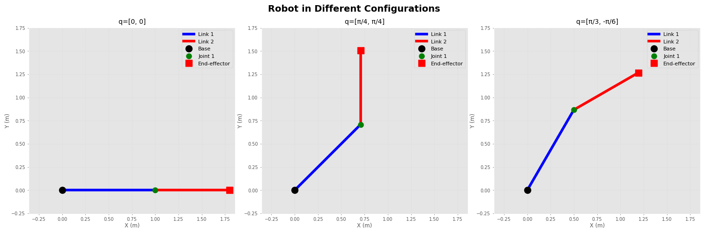
4.4 Working with Industrial Robots (Puma 560)
# Load a predefined robot model
puma = rtb.models.DH.Puma560()
print("Puma 560 Robot:")
print(puma)
# Get robot properties
print(f"\nNumber of joints: {puma.n}")
print(f"\nDH Parameters:")
print(puma.links)
# Define a joint configuration
q_puma = puma.qn # Nominal pose
print(f"\nNominal joint angles (rad): {q_puma}")
print(f"Nominal joint angles (deg): {np.degrees(q_puma)}")
# Compute forward kinematics
T_ee = puma.fkine(q_puma)
print(f"\nEnd-effector position: {T_ee.t}")
Puma 560 Robot:
DHRobot: Puma 560 (by Unimation), 6 joints (RRRRRR), dynamics, geometry, standard DH parameters
┌─────┬────────┬────────┬────────┬─────────┬────────┐
│ θⱼ │ dⱼ │ aⱼ │ ⍺ⱼ │ q⁻ │ q⁺ │
├─────┼────────┼────────┼────────┼─────────┼────────┤
│ q1 │ 0.6718 │ 0 │ 90.0° │ -160.0° │ 160.0° │
│ q2 │ 0 │ 0.4318 │ 0.0° │ -110.0° │ 110.0° │
│ q3 │ 0.15 │ 0.0203 │ -90.0° │ -135.0° │ 135.0° │
│ q4 │ 0.4318 │ 0 │ 90.0° │ -266.0° │ 266.0° │
│ q5 │ 0 │ 0 │ -90.0° │ -100.0° │ 100.0° │
│ q6 │ 0 │ 0 │ 0.0° │ -266.0° │ 266.0° │
└─────┴────────┴────────┴────────┴─────────┴────────┘
┌──┬──┐
└──┴──┘
┌──────┬─────┬──────┬───────┬─────┬──────┬─────┐
│ name │ q0 │ q1 │ q2 │ q3 │ q4 │ q5 │
├──────┼─────┼──────┼───────┼─────┼──────┼─────┤
│ qr │ 0° │ 90° │ -90° │ 0° │ 0° │ 0° │
│ qz │ 0° │ 0° │ 0° │ 0° │ 0° │ 0° │
│ qn │ 0° │ 45° │ 180° │ 0° │ 45° │ 0° │
│ qs │ 0° │ 0° │ -90° │ 0° │ 0° │ 0° │
└──────┴─────┴──────┴───────┴─────┴──────┴─────┘
Number of joints: 6
DH Parameters:
[RevoluteDH(d=0.672, a=0, ⍺=1.57, name = "link1", qlim=[-2.79, 2.79], m=0, r=[0, 0, 0], I=[0, 0.35, 0, 0, 0, 0], Jm=0.0002, B=0.00148, Tc=[0.395, -0.435], G=-62.6), RevoluteDH(d=0, a=0.432, ⍺=0, name = "link2", parent="link1", qlim=[-1.92, 1.92], m=17.4, r=[-0.364, 0.006, 0.228], I=[0.13, 0.524, 0.539, 0, 0, 0], Jm=0.0002, B=0.000817, Tc=[0.126, -0.071], G=108), RevoluteDH(d=0.15, a=0.0203, ⍺=-1.57, name = "link3", parent="link2", qlim=[-2.36, 2.36], m=4.8, r=[-0.0203, -0.0141, 0.07], I=[0.066, 0.086, 0.0125, 0, 0, 0], Jm=0.0002, B=0.00138, Tc=[0.132, -0.105], G=-53.7), RevoluteDH(d=0.432, a=0, ⍺=1.57, name = "link4", parent="link3", qlim=[-4.64, 4.64], m=0.82, r=[0, 0.019, 0], I=[0.0018, 0.0013, 0.0018, 0, 0, 0], Jm=3.3e-05, B=7.12e-05, Tc=[0.0112, -0.0169], G=76), RevoluteDH(d=0, a=0, ⍺=-1.57, name = "link5", parent="link4", qlim=[-1.75, 1.75], m=0.34, r=[0, 0, 0], I=[0.0003, 0.0004, 0.0003, 0, 0, 0], Jm=3.3e-05, B=8.26e-05, Tc=[0.00926, -0.0145], G=71.9), RevoluteDH(d=0, a=0, ⍺=0, name = "link6", parent="link5", qlim=[-4.64, 4.64], m=0.09, r=[0, 0, 0.032], I=[0.00015, 0.00015, 4e-05, 0, 0, 0], Jm=3.3e-05, B=3.67e-05, Tc=[0.00396, -0.0105], G=76.7)]
Nominal joint angles (rad): [0. 0.78539816 3.14159265 0. 0.78539816 0. ]
Nominal joint angles (deg): [ 0. 45. 180. 0. 45. 0.]
End-effector position: [ 0.59630315 -0.15005 0.65747573]
4.5 Inverse Kinematics
# Define a desired end-effector pose
T_desired = SE3(0.4, 0.3, 0.2) * SE3.Rz(45, unit='deg')
print("Desired end-effector pose:")
print(T_desired)
# Solve inverse kinematics
sol = puma.ikine_LM(T_desired) # Levenberg-Marquardt method
if sol.success:
q_ik = sol.q
print(f"\nIK Solution found!")
print(f"Joint angles (rad): {q_ik}")
print(f"Joint angles (deg): {np.degrees(q_ik)}")
# Verify the solution
T_verify = puma.fkine(q_ik)
print(f"\nVerification - achieved position: {T_verify.t}")
print(f"Position error: {np.linalg.norm(T_desired.t - T_verify.t):.6f}")
else:
print("IK solution not found!")
Desired end-effector pose:
0.7071 -0.7071 0 0.4
0.7071 0.7071 0 0.3
0 0 1 0.2
0 0 0 1
IK Solution found!
Joint angles (rad): [ 9.48298591e-01 -1.46225002e+00 -1.60209823e-01 -1.71516135e-11
1.62245984e+00 -1.62900427e-01]
Joint angles (deg): [ 5.43335070e+01 -8.37807547e+01 -9.17934671e+00 -9.82715063e-10
9.29601014e+01 -9.33350697e+00]
Verification - achieved position: [0.4 0.3 0.2]
Position error: 0.000000
4.6 Jacobian and Manipulability
# Compute Jacobian at a configuration
q = puma.qn
J = puma.jacob0(q) # Jacobian in world frame
print("Jacobian matrix (6x6):")
print(J)
# Compute manipulability
m = puma.manipulability(q)
print(f"\nManipulability measure: {m:.4f}")
# Check if at singularity
print(f"\nJacobian condition number: {np.linalg.cond(J):.2f}")
if np.linalg.cond(J) > 100:
print("Warning: Close to singularity!")
else:
print("Configuration is well-conditioned.")
Jacobian matrix (6x6):
[[ 1.50050000e-01 1.43542677e-02 3.19682976e-01 0.00000000e+00
0.00000000e+00 0.00000000e+00]
[ 5.96303149e-01 3.65130371e-17 1.78170459e-17 0.00000000e+00
0.00000000e+00 0.00000000e+00]
[-5.28447268e-18 5.96303149e-01 2.90974440e-01 0.00000000e+00
0.00000000e+00 0.00000000e+00]
[-3.52180785e-17 0.00000000e+00 0.00000000e+00 7.07106781e-01
0.00000000e+00 1.00000000e+00]
[ 6.86402876e-33 -1.00000000e+00 -1.00000000e+00 -1.04530143e-16
-1.00000000e+00 -6.12323400e-17]
[ 1.00000000e+00 6.12323400e-17 6.12323400e-17 -7.07106781e-01
6.12323400e-17 -3.13396163e-16]]
Manipulability measure: 0.0786
Jacobian condition number: 7.88
Configuration is well-conditioned.
5. Trajectory Planning with Visualization
Let’s create smooth trajectories for robot motion.
5.1 Joint Space Trajectory
from roboticstoolbox import jtraj, ctraj
# Define start and goal joint configurations
q_start = np.array([0, 0])
q_goal = np.array([pi/2, pi/4])
# Generate joint trajectory (50 steps)
traj = jtraj(q_start, q_goal, 50)
print(f"Trajectory shape: {traj.q.shape}")
print(f"Number of time steps: {len(traj.q)}")
# Plot joint trajectories
fig, axes = plt.subplots(2, 1, figsize=(10, 8))
time = np.arange(len(traj.q))
axes[0].plot(time, traj.q[:, 0], 'b-', linewidth=2, label='Joint 1')
axes[0].set_ylabel('Joint 1 (rad)')
axes[0].set_title('Joint Space Trajectory')
axes[0].grid(True)
axes[0].legend()
axes[1].plot(time, traj.q[:, 1], 'r-', linewidth=2, label='Joint 2')
axes[1].set_xlabel('Time step')
axes[1].set_ylabel('Joint 2 (rad)')
axes[1].grid(True)
axes[1].legend()
plt.tight_layout()
plt.show()
Trajectory shape: (50, 2)
Number of time steps: 50
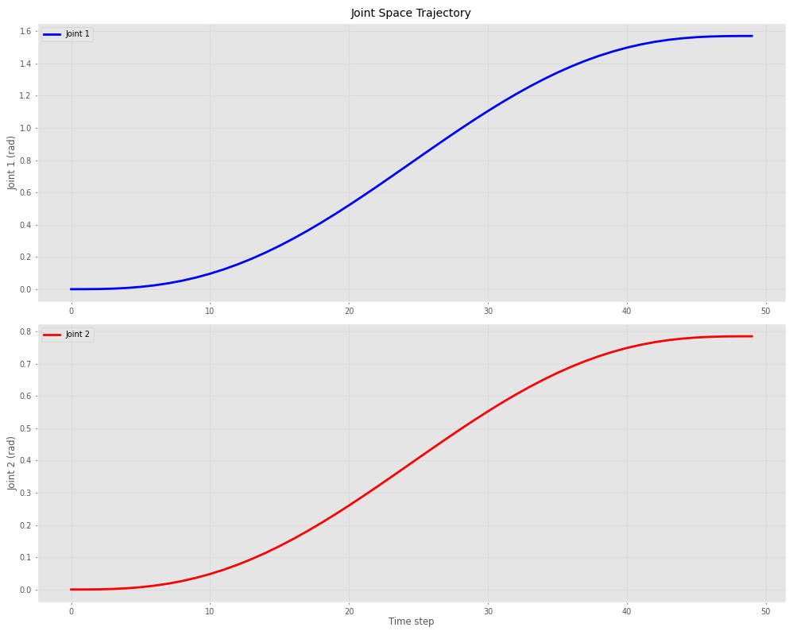
5.2 Cartesian Space Trajectory
# Define start and goal poses
T_start = SE3(0.4, 0.2, 0.3)
T_goal = SE3(0.3, 0.5, 0.4) * SE3.Rz(90, unit='deg')
# Generate Cartesian trajectory
T_traj = ctraj(T_start, T_goal, 50)
print(f"Number of poses in trajectory: {len(T_traj)}")
# Extract positions for plotting
positions = np.array([T.t for T in T_traj])
# Plot 3D trajectory
fig = plt.figure(figsize=(10, 8))
ax = fig.add_subplot(111, projection='3d')
ax.plot(positions[:, 0], positions[:, 1], positions[:, 2],
'b-', linewidth=2, label='Trajectory')
ax.scatter([T_start.t[0]], [T_start.t[1]], [T_start.t[2]],
c='green', s=100, marker='o', label='Start')
ax.scatter([T_goal.t[0]], [T_goal.t[1]], [T_goal.t[2]],
c='red', s=100, marker='s', label='Goal')
ax.set_xlabel('X (m)')
ax.set_ylabel('Y (m)')
ax.set_zlabel('Z (m)')
ax.set_title('Cartesian Space Trajectory')
ax.legend()
plt.tight_layout()
plt.show()
Number of poses in trajectory: 50
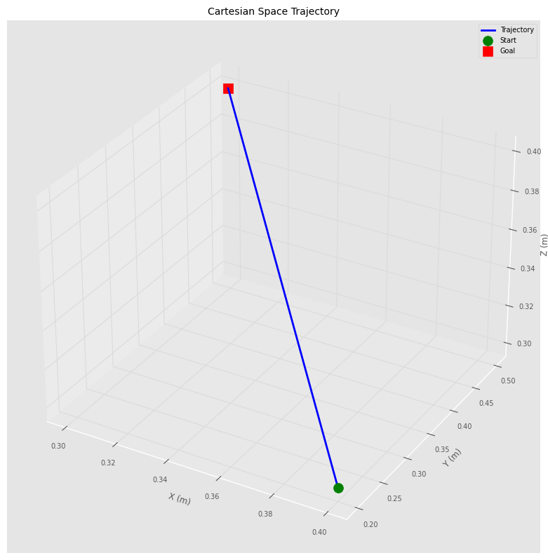
5.3 Visualizing Robot Motion Along Trajectory
# Generate trajectory for 2-link robot\n",
q_start_2link = np.array([0, 0])
q_goal_2link = np.array([pi/2, -pi/4])
traj_2link = jtraj(q_start_2link, q_goal_2link, 50) # 50 steps
# Plot robot at different points along trajectory
fig, axes = plt.subplots(2, 3, figsize=(15, 10))
axes = axes.flatten()
indices = [0, 10, 20, 30, 40, 49]
for i, (ax, idx) in enumerate(zip(axes, indices)):
q = traj_2link.q[idx]
plot_2link_robot(ax, q, title=f'Step {idx}: q=[{q[0]:.2f}, {q[1]:.2f}]')
ax.set_xlim([-0.5, 2])
ax.set_ylim([-0.5, 2])
plt.suptitle('Robot Motion Along Trajectory', fontsize=16, fontweight='bold')
plt.tight_layout()
plt.show()
WARNING:matplotlib.axes._base:Ignoring fixed x limits to fulfill fixed data aspect with adjustable data limits.
WARNING:matplotlib.axes._base:Ignoring fixed x limits to fulfill fixed data aspect with adjustable data limits.
WARNING:matplotlib.axes._base:Ignoring fixed x limits to fulfill fixed data aspect with adjustable data limits.
WARNING:matplotlib.axes._base:Ignoring fixed x limits to fulfill fixed data aspect with adjustable data limits.
WARNING:matplotlib.axes._base:Ignoring fixed x limits to fulfill fixed data aspect with adjustable data limits.
WARNING:matplotlib.axes._base:Ignoring fixed x limits to fulfill fixed data aspect with adjustable data limits.
WARNING:matplotlib.axes._base:Ignoring fixed y limits to fulfill fixed data aspect with adjustable data limits.
WARNING:matplotlib.axes._base:Ignoring fixed y limits to fulfill fixed data aspect with adjustable data limits.
WARNING:matplotlib.axes._base:Ignoring fixed y limits to fulfill fixed data aspect with adjustable data limits.
WARNING:matplotlib.axes._base:Ignoring fixed y limits to fulfill fixed data aspect with adjustable data limits.
WARNING:matplotlib.axes._base:Ignoring fixed y limits to fulfill fixed data aspect with adjustable data limits.
WARNING:matplotlib.axes._base:Ignoring fixed y limits to fulfill fixed data aspect with adjustable data limits.
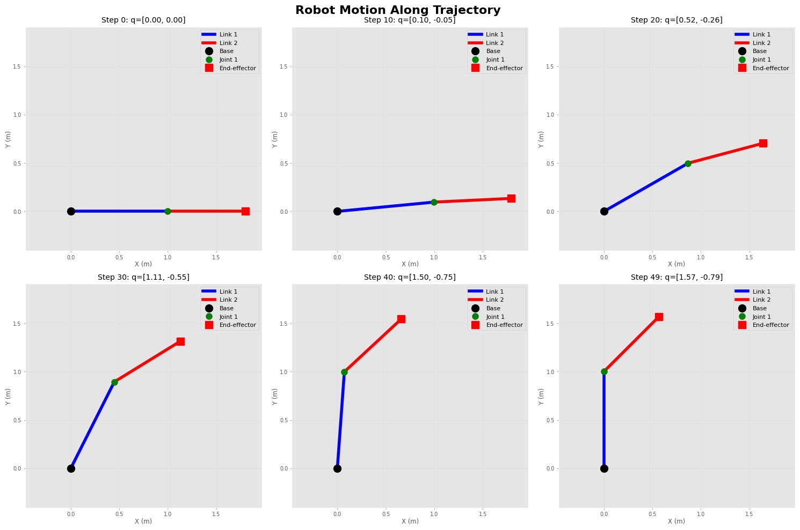
5.4 Computing End-Effector Path
# Compute end-effector positions along trajectory
ee_positions = []
for q in traj_2link.q:
T = robot_2link.fkine(q)
ee_positions.append(T.t[:2]) # Only X and Y for planar robot
ee_positions = np.array(ee_positions)
# Plot end-effector path
plt.figure(figsize=(10, 8))
plt.plot(ee_positions[:, 0], ee_positions[:, 1], 'b-o', linewidth=2, markersize=6)
plt.scatter([ee_positions[0, 0]], [ee_positions[0, 1]],
c='green', s=150, marker='o', label='Start', zorder=5)
plt.scatter([ee_positions[-1, 0]], [ee_positions[-1, 1]],
c='red', s=150, marker='s', label='Goal', zorder=5)
plt.xlabel('X (m)')
plt.ylabel('Y (m)')
plt.title('End-Effector Path')
plt.grid(True)
plt.legend()
plt.axis('equal')
plt.tight_layout()
plt.show()
print(f"Path length: {len(ee_positions)} points")
print(f"Start position: {ee_positions[0]}")
print(f"Goal position: {ee_positions[-1]}")
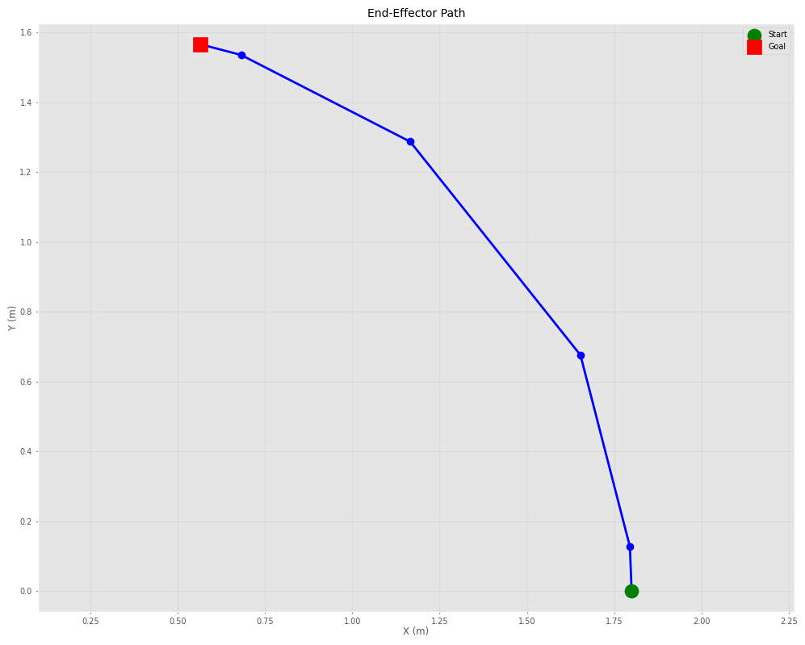
Path length: 6 points
Start position: [1.8 0. ]
Goal position: [0.56568542 1.56568542]
6. Advanced Topics and Visualizations
Let’s explore some advanced concepts in robotics.
6.1 Workspace Analysis
# Generate random configurations and compute reachable positions
n_samples = 1000
workspace_points = []
for _ in range(n_samples):
# Random joint angles within limits
q = np.random.uniform(-pi, pi, 2)
T = robot_2link.fkine(q)
workspace_points.append(T.t[:2])
workspace_points = np.array(workspace_points)
# Plot workspace
plt.figure(figsize=(10, 10))
plt.scatter(workspace_points[:, 0], workspace_points[:, 1],
c='blue', alpha=0.3, s=1)
plt.xlabel('X (m)')
plt.ylabel('Y (m)')
plt.title('Robot Workspace (2-Link Planar Robot)')
plt.grid(True)
plt.axis('equal')
plt.tight_layout()
plt.show()
print(f"Workspace samples: {n_samples}")
print(f"Max reach: {np.max(np.linalg.norm(workspace_points, axis=1)):.3f} m")
print(f"Min reach: {np.min(np.linalg.norm(workspace_points, axis=1)):.3f} m")
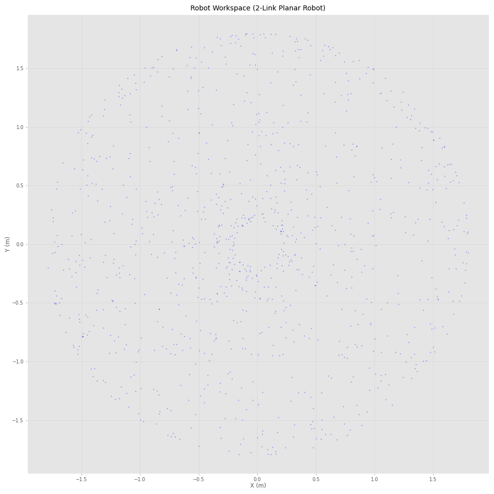
Workspace samples: 1000
Max reach: 1.800 m
Min reach: 0.200 m
6.2 Velocity Kinematics
# Define a configuration and joint velocities
q = np.array([pi/4, pi/6])
qd = np.array([0.5, -0.3]) # Joint velocities (rad/s)
# Compute Jacobian
J = robot_2link.jacob0(q)
print("Jacobian (6x2 for planar robot):")
print(J)
# Compute end-effector velocity
v = J @ qd
print(f"\nJoint velocities: {qd}")
print(f"End-effector velocity (spatial): {v}")
print(f"Linear velocity [vx, vy, vz]: {v[:3]}")
print(f"Angular velocity [wx, wy, wz]: {v[3:]}")
Jacobian (6x2 for planar robot):
[[-1.47984744 -0.77274066]
[ 0.91416202 0.20705524]
[ 0. 0. ]
[ 0. 0. ]
[ 0. 0. ]
[ 1. 1. ]]
Joint velocities: [ 0.5 -0.3]
End-effector velocity (spatial): [-0.50810152 0.39496444 0. 0. 0. 0.2 ]
Linear velocity [vx, vy, vz]: [-0.50810152 0.39496444 0. ]
Angular velocity [wx, wy, wz]: [0. 0. 0.2]
6.3 Creating a Custom Robot
# Create a 3-DOF robot (RRR)
L1, L2, L3 = 0.5, 0.4, 0.3
custom_robot = DHRobot([
RevoluteDH(d=0, a=L1, alpha=0),
RevoluteDH(d=0, a=L2, alpha=0),
RevoluteDH(d=0, a=L3, alpha=0)
], name="Custom 3-DOF")
print("Custom 3-DOF Robot:")
print(custom_robot)
# Test configuration
q_test = np.array([pi/6, pi/4, -pi/3])
T_test = custom_robot.fkine(q_test)
print(f"\nTest configuration: {np.degrees(q_test)}°")
print(f"End-effector position: {T_test.t}")
# Manual plotting function for 3-link planar robot
def plot_3link_robot(q, L=[0.5, 0.4, 0.3]):
"""Plot 3-link planar robot"""
fig, ax = plt.subplots(figsize=(10, 8))
# Compute joint positions
p0 = np.array([0, 0])
p1 = np.array([L[0] * np.cos(q[0]), L[0] * np.sin(q[0])])
p2 = p1 + np.array([L[1] * np.cos(q[0] + q[1]), L[1] * np.sin(q[0] + q[1])])
p3 = p2 + np.array([L[2] * np.cos(q[0] + q[1] + q[2]),
L[2] * np.sin(q[0] + q[1] + q[2])])
# Plot links
ax.plot([p0[0], p1[0]], [p0[1], p1[1]], 'b-', linewidth=5, label='Link 1')
ax.plot([p1[0], p2[0]], [p1[1], p2[1]], 'g-', linewidth=4, label='Link 2')
ax.plot([p2[0], p3[0]], [p2[1], p3[1]], 'r-', linewidth=3, label='Link 3')
# Plot joints
ax.plot(p0[0], p0[1], 'ko', markersize=12, label='Base', zorder=5)
ax.plot(p1[0], p1[1], 'bo', markersize=10, zorder=5)
ax.plot(p2[0], p2[1], 'go', markersize=10, zorder=5)
ax.plot(p3[0], p3[1], 'rs', markersize=12, label='End-effector', zorder=5)
ax.set_xlim([-0.5, 1.5])
ax.set_ylim([-1, 1])
ax.set_xlabel('X (m)')
ax.set_ylabel('Y (m)')
ax.set_title('Custom 3-DOF Robot')
ax.grid(True, alpha=0.3)
ax.axis('equal')
ax.legend()
plt.tight_layout()
return fig, ax
# Plot the robot
fig, ax = plot_3link_robot(q_test, L=[L1, L2, L3])
plt.show()
Custom 3-DOF Robot:
DHRobot: Custom 3-DOF, 3 joints (RRR), dynamics, standard DH parameters
┌─────┬────┬─────┬──────┐
│ θⱼ │ dⱼ │ aⱼ │ ⍺ⱼ │
├─────┼────┼─────┼──────┤
│ q1 │ 0 │ 0.5 │ 0.0° │
│ q2 │ 0 │ 0.4 │ 0.0° │
│ q3 │ 0 │ 0.3 │ 0.0° │
└─────┴────┴─────┴──────┘
┌──┬──┐
└──┴──┘
Test configuration: [ 30. 45. -60.]°
End-effector position: [0.82631807 0.71401604 0. ]
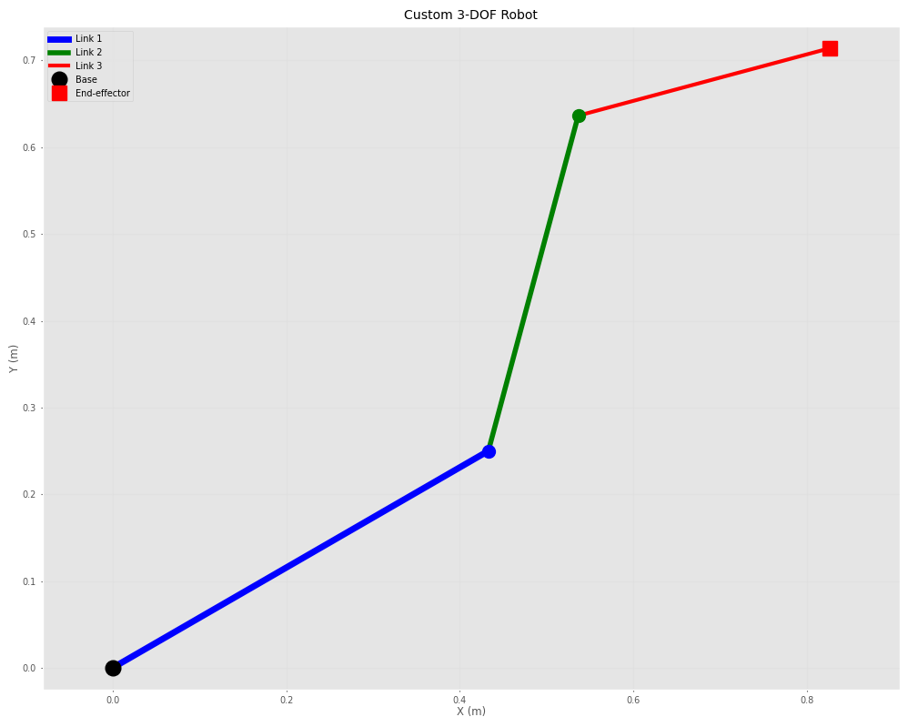
6.4 Dynamics (if needed)
# For robots with dynamics parameters, you can compute:
# - Inertia matrix
# - Coriolis/centripetal matrix
# - Gravity loading
# Note: Our simple robots don't have mass properties defined
# For real dynamics, you'd need to specify link masses and inertias
print("Dynamics Example (conceptual):")
print("\nFor a robot with dynamics, you would compute:")
print("1. M(q) - Inertia matrix: robot.inertia(q)")
print("2. C(q,qd) - Coriolis matrix: robot.coriolis(q, qd)")
print("3. g(q) - Gravity loading: robot.gravload(q)")
print("\nEquation of motion: M(q)·q̈ + C(q,q̇)·q̇ + g(q) = τ")
Dynamics Example (conceptual):
For a robot with dynamics, you would compute:
1. M(q) - Inertia matrix: robot.inertia(q)
2. C(q,qd) - Coriolis matrix: robot.coriolis(q, qd)
3. g(q) - Gravity loading: robot.gravload(q)
Equation of motion: M(q)·q̈ + C(q,q̇)·q̇ + g(q) = τ
6.5 Interpolation Between Poses
# Create start and end poses
T_A = SE3(0, 0, 0) * SE3.Rz(0)
T_B = SE3(1, 1, 0) * SE3.Rz(90, unit='deg')
print("Pose A:")
print(T_A)
print("\nPose B:")
print(T_B)
# Interpolate between poses
n_steps = 10
interpolated_poses = []
for s in np.linspace(0, 1, n_steps):
T_interp = T_A.interp(T_B, s)
interpolated_poses.append(T_interp)
# Visualize interpolated frames
fig = plt.figure(figsize=(12, 10))
ax = fig.add_subplot(111, projection='3d')
for i, T in enumerate(interpolated_poses):
alpha = 0.3 + 0.7 * (i / (n_steps - 1))
T.plot(ax=ax, frame=f'{i}', length=0.15, width=1.5)
ax.set_xlabel('X')
ax.set_ylabel('Y')
ax.set_zlabel('Z')
ax.set_title('Pose Interpolation')
plt.tight_layout()
plt.show()
print(f"\nGenerated {n_steps} interpolated poses")
Pose A:
1 0 0 0
0 1 0 0
0 0 1 0
0 0 0 1
Pose B:
0 -1 0 1
1 0 0 1
0 0 1 0
0 0 0 1
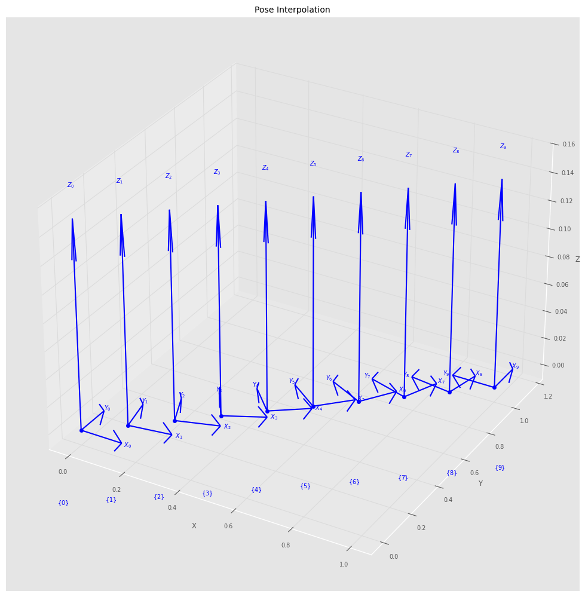
Generated 10 interpolated poses
7. Practical Examples
Let’s work through some practical robotics problems.
7.1 Pick and Place Task
# Define pick and place locations
pick_pose = SE3(0.5, 0.3, 0.2) * SE3.Rz(0)
place_pose = SE3(0.3, -0.4, 0.25) * SE3.Rz(45, unit='deg')
approach_height = 0.1 # Approach from above
# Define waypoints
approach_pick = SE3(pick_pose.t[0], pick_pose.t[1], pick_pose.t[2] + approach_height) * SE3.Rz(0)
approach_place = SE3(place_pose.t[0], place_pose.t[1], place_pose.t[2] + approach_height) * SE3.Rz(45, unit='deg')
waypoints = [approach_pick, pick_pose, approach_pick, approach_place, place_pose, approach_place]
labels = ['Approach Pick', 'Pick', 'Lift', 'Approach Place', 'Place', 'Retract']
print("Pick and Place Waypoints:")
for label, wp in zip(labels, waypoints):
print(f"{label}: {wp.t}")
# Visualize waypoints
fig = plt.figure(figsize=(12, 10))
ax = fig.add_subplot(111, projection='3d')
positions = np.array([wp.t for wp in waypoints])
ax.plot(positions[:, 0], positions[:, 1], positions[:, 2],
'b-o', linewidth=2, markersize=8, label='Path')
for i, (label, wp) in enumerate(zip(labels, waypoints)):
wp.plot(ax=ax, frame=label, length=0.05, width=1)
ax.set_xlabel('X (m)')
ax.set_ylabel('Y (m)')
ax.set_zlabel('Z (m)')
ax.set_title('Pick and Place Task Waypoints')
ax.legend()
plt.tight_layout()
plt.show()
Pick and Place Waypoints:
Approach Pick: [0.5 0.3 0.3]
Pick: [0.5 0.3 0.2]
Lift: [0.5 0.3 0.3]
Approach Place: [ 0.3 -0.4 0.35]
Place: [ 0.3 -0.4 0.25]
Retract: [ 0.3 -0.4 0.35]
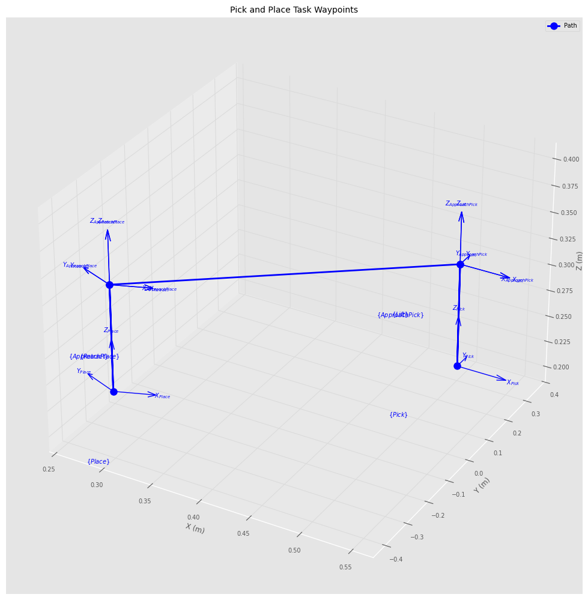
7.2 Circular Path Planning
# Generate circular path in 3D space
center = np.array([0.5, 0, 0.3])
radius = 0.2
n_points = 50
circular_path = []
theta_values = np.linspace(0, 2*pi, n_points)
for theta in theta_values:
x = center[0] + radius * np.cos(theta)
y = center[1] + radius * np.sin(theta)
z = center[2]
# Create pose tangent to circle
T = SE3(x, y, z) * SE3.Rz(theta + pi/2, unit='rad')
circular_path.append(T)
# Visualize circular path
fig = plt.figure(figsize=(12, 10))
ax = fig.add_subplot(111, projection='3d')
path_positions = np.array([T.t for T in circular_path])
ax.plot(path_positions[:, 0], path_positions[:, 1], path_positions[:, 2],
'b-', linewidth=2, label='Circular Path')
# Plot some frames along the path
for i in range(0, n_points, 5):
circular_path[i].plot(ax=ax, frame='', length=0.05, width=1)
ax.set_xlabel('X (m)')
ax.set_ylabel('Y (m)')
ax.set_zlabel('Z (m)')
ax.set_title('Circular Path with Orientation')
ax.legend()
plt.tight_layout()
plt.show()
print(f"Generated circular path with {n_points} points")
print(f"Center: {center}")
print(f"Radius: {radius} m")
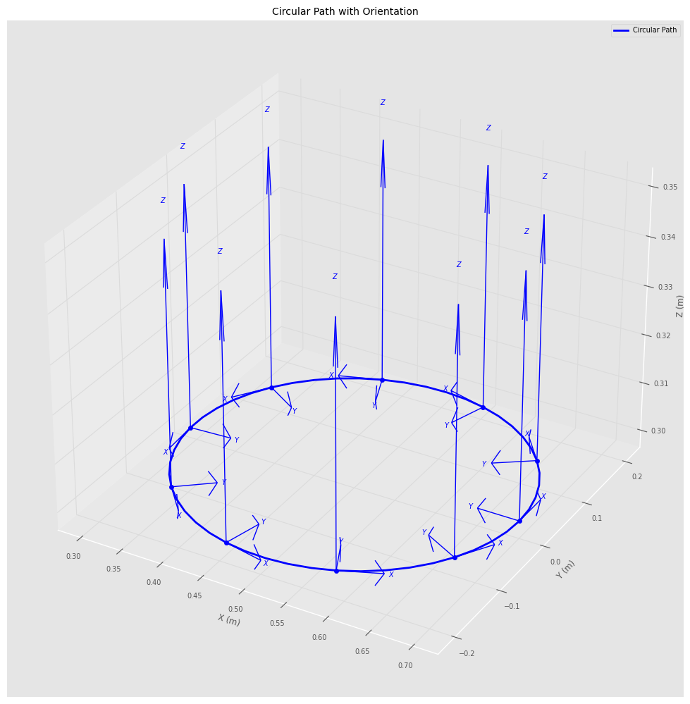
Generated circular path with 50 points
Center: [0.5 0. 0.3]
Radius: 0.2 m
7.3 Manipulability Analysis Along Trajectory
# Generate trajectory and compute manipulability at each point
q_start = np.array([0, pi/4])
q_end = np.array([pi/2, -pi/4])
traj = jtraj(q_start, q_end, 50)
manipulability_values = []
for q in traj.q:
m = robot_2link.manipulability(q)
manipulability_values.append(m)
# Plot manipulability along trajectory
fig, (ax1, ax2) = plt.subplots(2, 1, figsize=(12, 10))
time_steps = np.arange(len(traj.q))
# Plot joint angles
ax1.plot(time_steps, np.degrees(traj.q[:, 0]), 'b-', label='Joint 1', linewidth=2)
ax1.plot(time_steps, np.degrees(traj.q[:, 1]), 'r-', label='Joint 2', linewidth=2)
ax1.set_ylabel('Joint Angle (deg)')
ax1.set_title('Joint Trajectory')
ax1.legend()
ax1.grid(True)
# Plot manipulability
ax2.plot(time_steps, manipulability_values, 'g-', linewidth=2)
ax2.set_xlabel('Time Step')
ax2.set_ylabel('Manipulability')
ax2.set_title('Manipulability Along Trajectory')
ax2.grid(True)
ax2.axhline(y=np.mean(manipulability_values), color='r',
linestyle='--', label=f'Mean: {np.mean(manipulability_values):.4f}')
ax2.legend()
plt.tight_layout()
plt.show()
print(f"Min manipulability: {np.min(manipulability_values):.4f}")
print(f"Max manipulability: {np.max(manipulability_values):.4f}")
print(f"Mean manipulability: {np.mean(manipulability_values):.4f}")
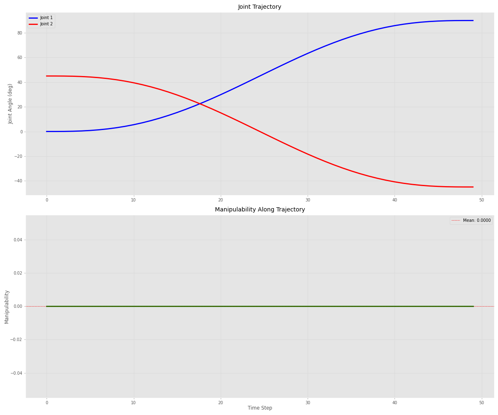
Min manipulability: 0.0000
Max manipulability: 0.0000
Mean manipulability: 0.0000
8. Additional Resources and Further Learning
Here are some topics and resources for deeper exploration.
8.1 Key Concepts Summary
summary = """
📚 KEY CONCEPTS COVERED:
1. SPATIAL MATHEMATICS
- Rotation matrices (SO3)
- Homogeneous transforms (SE3)
- Unit quaternions
- Euler angles and conversions
2. ROBOT KINEMATICS
- Denavit-Hartenberg parameters
- Forward kinematics
- Inverse kinematics (numerical)
- Jacobian matrices
- Manipulability analysis
3. TRAJECTORY PLANNING
- Joint space trajectories
- Cartesian space trajectories
- Path interpolation
- Waypoint navigation
4. VISUALIZATION
- Coordinate frames
- Robot configurations
- Workspace analysis
- Motion animation concepts
"""
print(summary)
📚 KEY CONCEPTS COVERED:
1. SPATIAL MATHEMATICS
- Rotation matrices (SO3)
- Homogeneous transforms (SE3)
- Unit quaternions
- Euler angles and conversions
2. ROBOT KINEMATICS
- Denavit-Hartenberg parameters
- Forward kinematics
- Inverse kinematics (numerical)
- Jacobian matrices
- Manipulability analysis
3. TRAJECTORY PLANNING
- Joint space trajectories
- Cartesian space trajectories
- Path interpolation
- Waypoint navigation
4. VISUALIZATION
- Coordinate frames
- Robot configurations
- Workspace analysis
- Motion animation concepts
8.2 Further Topics to Explore
further_topics = """
🚀 ADVANCED TOPICS FOR FURTHER STUDY:
1. ADVANCED KINEMATICS
- Screw theory
- Differential kinematics
- Singularity analysis
- Redundancy resolution
2. DYNAMICS
- Equations of motion
- Newton-Euler formulation
- Lagrangian mechanics
- Computed torque control
3. MOTION PLANNING
- Collision detection
- Path planning algorithms (RRT, PRM)
- Optimal trajectory generation
- Motion primitives
4. CONTROL
- PID control
- Impedance control
- Force control
- Visual servoing
5. ROBOT VISION
- Camera models
- Hand-eye calibration
- Pose estimation
- Object recognition
"""
print(further_topics)
🚀 ADVANCED TOPICS FOR FURTHER STUDY:
1. ADVANCED KINEMATICS
- Screw theory
- Differential kinematics
- Singularity analysis
- Redundancy resolution
2. DYNAMICS
- Equations of motion
- Newton-Euler formulation
- Lagrangian mechanics
- Computed torque control
3. MOTION PLANNING
- Collision detection
- Path planning algorithms (RRT, PRM)
- Optimal trajectory generation
- Motion primitives
4. CONTROL
- PID control
- Impedance control
- Force control
- Visual servoing
5. ROBOT VISION
- Camera models
- Hand-eye calibration
- Pose estimation
- Object recognition
8.3 Useful Resources
resources = """
📖 DOCUMENTATION & RESOURCES:
Official Documentation:
- Spatialmath: https://github.com/petercorke/spatialmath-python
- Robotics Toolbox: https://github.com/petercorke/robotics-toolbox-python
- Online Documentation: https://petercorke.github.io/robotics-toolbox-python/
Books:
- "Robotics, Vision and Control" by Peter Corke
- "Modern Robotics" by Lynch & Park
- "Introduction to Robotics" by Craig
Online Courses:
- QUT Robot Academy: https://robotacademy.net.au/
- Coursera: Robotics Specialization
- MIT OpenCourseWare: Robotics courses
Community:
- GitHub Issues for both libraries
- ROS (Robot Operating System) community
- r/robotics on Reddit
"""
print(resources)
📖 DOCUMENTATION & RESOURCES:
Official Documentation:
- Spatialmath: https://github.com/petercorke/spatialmath-python
- Robotics Toolbox: https://github.com/petercorke/robotics-toolbox-python
- Online Documentation: https://petercorke.github.io/robotics-toolbox-python/
Books:
- "Robotics, Vision and Control" by Peter Corke
- "Modern Robotics" by Lynch & Park
- "Introduction to Robotics" by Craig
Online Courses:
- QUT Robot Academy: https://robotacademy.net.au/
- Coursera: Robotics Specialization
- MIT OpenCourseWare: Robotics courses
Community:
- GitHub Issues for both libraries
- ROS (Robot Operating System) community
- r/robotics on Reddit
8.4 Quick Reference
quick_ref = """
⚡ QUICK REFERENCE:
COMMON SPATIALMATH OPERATIONS:
┌─────────────────────────────────────────────────────────┐
│ SE3(x, y, z) # Create translation │
│ SE3.Rx/Ry/Rz(angle) # Create rotation │
│ T1 * T2 # Compose transforms │
│ T.inv() # Inverse transform │
│ T * point # Transform point │
│ T.t # Get translation │
│ T.R # Get rotation matrix │
│ T.rpy() # Get RPY angles │
└─────────────────────────────────────────────────────────┘
COMMON ROBOTICS TOOLBOX OPERATIONS:
┌─────────────────────────────────────────────────────────┐
│ robot.fkine(q) # Forward kinematics │
│ robot.ikine_LM(T) # Inverse kinematics │
│ robot.jacob0(q) # Jacobian (world frame) │
│ robot.manipulability(q) # Manipulability measure │
│ robot.plot(q) # Visualize robot │
│ jtraj(q0, qf, n) # Joint trajectory │
│ ctraj(T0, Tf, n) # Cartesian trajectory │
└─────────────────────────────────────────────────────────┘
"""
print(quick_ref)
⚡ QUICK REFERENCE:
COMMON SPATIALMATH OPERATIONS:
┌─────────────────────────────────────────────────────────┐
│ SE3(x, y, z) # Create translation │
│ SE3.Rx/Ry/Rz(angle) # Create rotation │
│ T1 * T2 # Compose transforms │
│ T.inv() # Inverse transform │
│ T * point # Transform point │
│ T.t # Get translation │
│ T.R # Get rotation matrix │
│ T.rpy() # Get RPY angles │
└─────────────────────────────────────────────────────────┘
COMMON ROBOTICS TOOLBOX OPERATIONS:
┌─────────────────────────────────────────────────────────┐
│ robot.fkine(q) # Forward kinematics │
│ robot.ikine_LM(T) # Inverse kinematics │
│ robot.jacob0(q) # Jacobian (world frame) │
│ robot.manipulability(q) # Manipulability measure │
│ robot.plot(q) # Visualize robot │
│ jtraj(q0, qf, n) # Joint trajectory │
│ ctraj(T0, Tf, n) # Cartesian trajectory │
└─────────────────────────────────────────────────────────┘
9. Practice Exercises
Try these exercises to test your understanding!
Exercise 1: Create and visualize a 4-DOF robot
# YOUR CODE HERE
# Create a 4-DOF robot with your choice of link lengths
# Compute forward kinematics for at least 3 different configurations
# Visualize the robot in these configurations
pass # Remove this and add your code
Exercise 2: Plan a square trajectory
# YOUR CODE HERE
# Create a square trajectory in Cartesian space
# The square should have 0.2m sides
# Generate smooth trajectories between corners
# Visualize the complete path
pass # Remove this and add your code
Exercise 3: Workspace boundary analysis
# YOUR CODE HERE
# For a 2-link robot, find the exact boundary of the reachable workspace
# Hint: Consider maximum and minimum reach configurations
# Plot the workspace boundary as a circle/annulus
pass # Remove this and add your code
Congratulations!
You’ve completed this comprehensive guide to spatialmath-python and roboticstoolbox-python!
What you’ve learned:
- ✅ Spatial mathematics fundamentals
- ✅ Transform operations and rotations
- ✅ Robot modeling and kinematics
- ✅ Trajectory planning
- ✅ Visualization techniques
- ✅ Practical robotics applications
Next steps:
- Experiment with the provided examples
- Try the practice exercises
- Explore the advanced topics
- Build your own robot applications!
try it on colabs